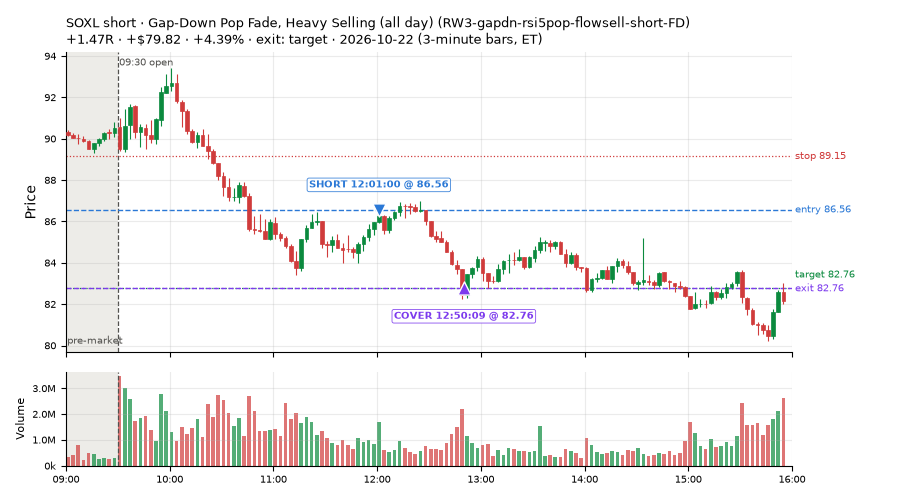
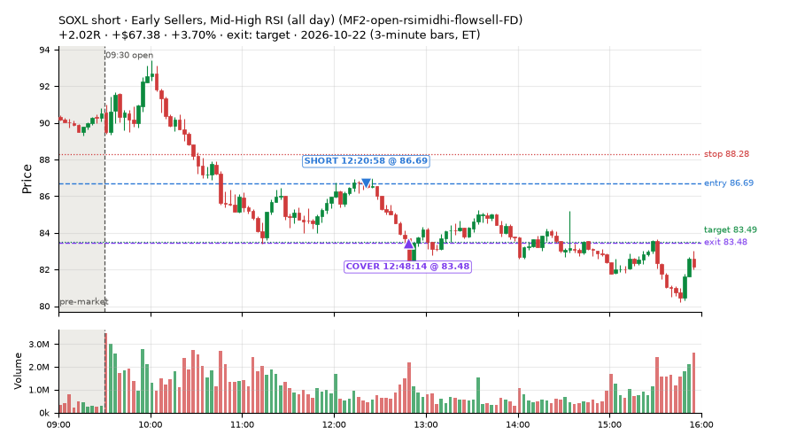
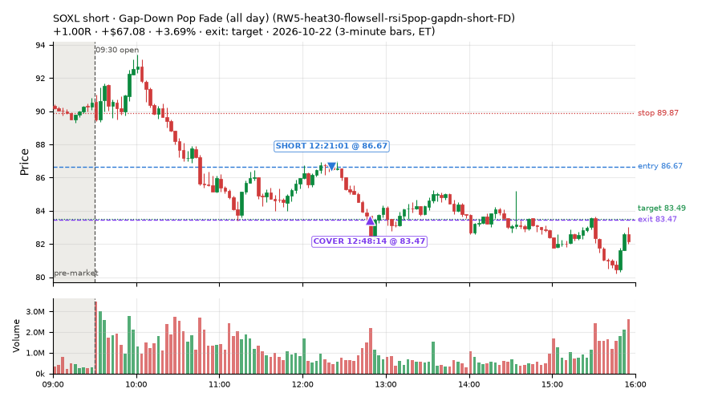
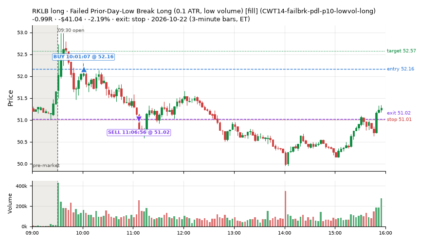
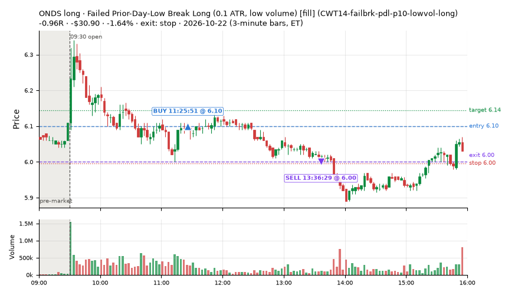
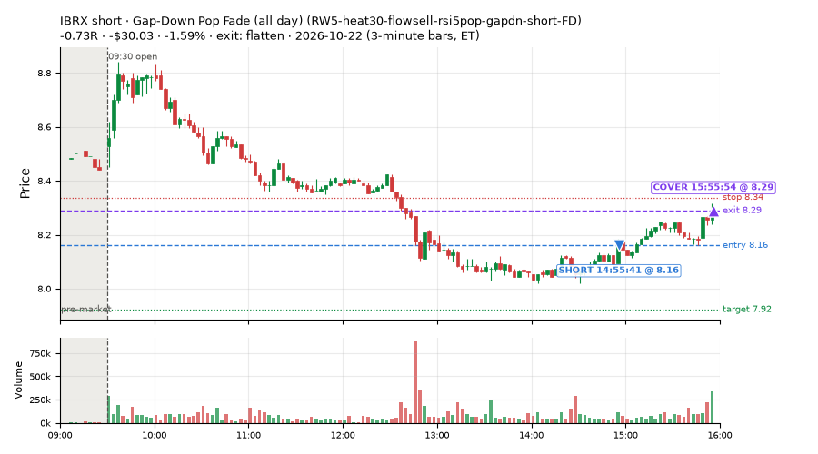
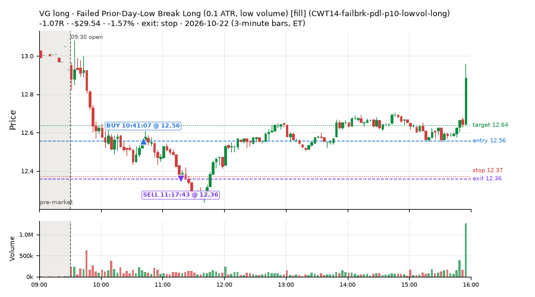
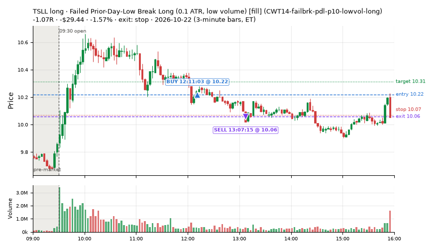

126 trades · win rate 76% · P/L $1,432.56
PROBATION: no live setup has passed both locked test periods. 10 owner-directed setups added 2026-10-08 (MarcoFlow top 5 + 5 new), untested live. RW6G1 (RW6 + VWAP band guard) added 2026-10-09, probation.

| Symbol | Setup | Side | In | Out | Entry | Exit | Exit reason | % gained | P/L |
|---|---|---|---|---|---|---|---|---|---|
| SOXL | Gap-Down Pop Fade, Heavy Selling (all day) (RW3-gapdn-rsi5pop-flowsell-short-FD) | short | 12:01 | 12:50 | 86.56 | 82.76 | target | +4.39% | $79.82 |
| SOXL | Early Sellers, Mid-High RSI (all day) (MF2-open-rsimidhi-flowsell-FD) | short | 12:20 | 12:48 | 86.69 | 83.48 | target | +3.70% | $67.38 |
| SOXL | Gap-Down Pop Fade (all day) (RW5-heat30-flowsell-rsi5pop-gapdn-short-FD) | short | 12:21 | 12:48 | 86.67 | 83.47 | target | +3.69% | $67.08 |
| Symbol | Setup | Side | In | Out | Entry | Exit | Exit reason | % lost | P/L |
|---|---|---|---|---|---|---|---|---|---|
| RKLB | CWT14-failbrk-pdl-p10-lowvol-long | long | 10:01 | 11:06 | 52.16 | 51.02 | stop | -2.19% | $-41.04 |
| ONDS | CWT14-failbrk-pdl-p10-lowvol-long | long | 11:25 | 13:36 | 6.10 | 6.00 | stop | -1.64% | $-30.90 |
| IBRX | RW5-heat30-flowsell-rsi5pop-gapdn-short-FD | short | 14:55 | 15:55 | 8.16 | 8.29 | flatten | -1.59% | $-30.03 |
| VG | CWT14-failbrk-pdl-p10-lowvol-long | long | 10:41 | 11:17 | 12.56 | 12.36 | stop | -1.57% | $-29.54 |
| TSLL | CWT14-failbrk-pdl-p10-lowvol-long | long | 12:11 | 13:07 | 10.22 | 10.06 | stop | -1.57% | $-29.44 |








Signal to fill: median 1s, 90th percentile 3s (126 trades). Bars close each minute; the order follows the bar close.
Best excursion (MFE): median 0.86R; worst (MAE) median 0.29R. 13% of trades never got +0.25R in our favour; 1 reached +1R and still closed at or below 0.
| Symbol | Setup | Best R | Worst R | Closed R |
|---|---|---|---|---|
| AFRM | MF2-open-rsimidhi-flowsell-FD | +1.79 | -0.65 | -0.28 |
| ARKG | MF2-open-rsimidhi-flowsell-FD | +0.81 | -1.35 | -1.04 |
| TSLL | CWT14-failbrk-pdl-p10-lowvol-long | +0.40 | -1.14 | -1.07 |
| CBOE | NS4-pm-vwap-reclaim-oversold-short | +0.38 | -1.08 | -1.02 |
| SNAP | L3-gap-slope-fromopen-FD | +0.42 | -1.07 | -0.96 |
| Entry time | Trades | Win | Avg R | P/L |
|---|---|---|---|---|
| 09:50-10:30 | 8 | 62% | -0.19 | $-19.08 |
| 10:30-11:30 | 21 | 71% | +0.15 | $116.38 |
| 11:30-13:00 | 85 | 87% | +0.88 | $1,432.55 |
| 13:00-14:00 | 4 | 50% | -0.04 | $0.95 |
| 14:00-16:00 | 8 | 0% | -0.89 | $-98.24 |
| Setup | Trades | Win | Avg R | Adj R (net of SPY) | P/L |
|---|---|---|---|---|---|
| Failed Prior-Day-Low Break Long (0.1 ATR, low volume) [fill] (CWT14-failbrk-pdl-p10-lowvol-long) | 18.0 | 56% | -0.23 | -0.22 | $-167.20 |
| Gap-Down Recovery Fade (all day) (L3-gap-slope-fromopen-FD) | 18.0 | 50% | -0.00 | -0.06 | $13.52 |
| Early Sellers, Mid-High RSI (all day) (MF2-open-rsimidhi-flowsell-FD) | 23.0 | 78% | +1.29 | +0.67 | $430.57 |
| Early Sellers, Strong Heat (all day) (MF4-h40-open-flowsell-FD) | 10.0 | 80% | +0.07 | -0.02 | $84.64 |
| Afternoon VWAP Reclaim Fade (NS4-pm-vwap-reclaim-oversold-short) owner-directed; holdouts once: Sep-Oct -0.086R n49, Apr-Jun -0.080R n342 | 2.0 | 0% | -1.04 | -0.96 | $-14.60 |
| Big Loser Flush Buy (NS5-sma50-flush-oversold-long) owner-directed; holdouts once: Sep-Oct -0.008R n73, Apr-Jun +0.002R n231 | 1.0 | 100% | +0.89 | +0.94 | $14.79 |
| Gap-Down Pop Fade, Heavy Selling (all day) (RW3-gapdn-rsi5pop-flowsell-short-FD) | 25.0 | 100% | +0.97 | +0.63 | $613.54 |
| Gap-Down Pop Fade (all day) (RW5-heat30-flowsell-rsi5pop-gapdn-short-FD) | 29.0 | 86% | +0.68 | +0.32 | $457.30 |
Market direction (SPY, beta 1) accounted for $304.48 of today's $1,432.56; the rest ($1,128.08) came from the setups themselves. Avg R net of SPY: +0.27 (incl. a hedge leg's cost; report only).
12 setups live today. Today: 196 signals, 126 taken, 21 lost because another setup held the symbol (11%). Since 2026-10-06 (13 sessions): 947 signals, 590 taken, 79 lost to other setups (8%). Peak open positions today 82 of 160 slots. Earnings blackout removed 733 symbols before scanning.
Simulated playing time (not live): 355 what-if trades of signals not taken, avg +0.02R, 56% winners; of them 79 lost to another setup (avg +0.07R).
Silent: intraday_momentum · Crowded out: MF4-h40-open-flowsell, MF3-open-flowsell-rsi5hi, MF5-flowsell-vwapup-rsi5hi
| Prio | Setup | Today sig / taken | Sessions | Signals / taken / trades | Taken/day | Expected/day | Lost to other setups | Lost to (setup n) | Top skip reasons | SIMULATED: not-taken n / avg R / win | Verdict |
|---|---|---|---|---|---|---|---|---|---|---|---|
| 1 | Gap-Down Recovery Fade (all day) L3-gap-slope-fromopen-FD | 34 / 18 | 2 | 83 / 23 / 23 | 11.50 | – | 9 | L3-gap-slope-fromopen-FD 9 | not shortable / shorts off 42, symbol held by another setup 9, spread / quote / size 9 | 60 / +0.18R / 70% | ok 57.5 entries/week |
| 2 | Gap-Down Pop Fade (all day) RW5-heat30-flowsell-rsi5pop-gapdn-short-FD | 33 / 29 | 5 | 51 / 45 / 45 | 9.00 | 12.79 | 0 | – | spread / quote / size 5, not shortable / shorts off 1 | 6 / -0.10R / 50% | ok 45.0 entries/week |
| 3 | Gap-Down Pop Fade, Heavy Selling (all day) RW3-gapdn-rsi5pop-flowsell-short-FD | 30 / 25 | 5 | 48 / 38 / 38 | 7.60 | 13.59 | 0 | – | spread / quote / size 6, not shortable / shorts off 4 | 10 / +0.26R / 60% | ok 38.0 entries/week |
| 4 | Early Sellers, Mid-High RSI (all day) MF2-open-rsimidhi-flowsell-FD | 30 / 23 | 3 | 33 / 26 / 26 | 8.67 | 10.09 | 4 | RW5-heat30-flowsell-rsi5pop-gapdn-short-FD 4, RW3-gapdn-rsi5pop-flowsell-short-FD 4, MF2-open-rsimidhi-flowsell-FD 4 | symbol held by another setup 4, spread / quote / size 2, not shortable / shorts off 1 | 7 / +0.97R / 71% | ok 43.3 entries/week |
| 5 | Early Sellers, Strong Heat (all day) MF4-h40-open-flowsell-FD | 25 / 10 | 3 | 37 / 19 / 19 | 6.33 | 16.45 | 4 | RW5-heat30-flowsell-rsi5pop-gapdn-short-FD 4, RW3-gapdn-rsi5pop-flowsell-short-FD 4, MF2-open-rsimidhi-flowsell-FD 3 | not shortable / shorts off 8, spread / quote / size 6, symbol held by another setup 4 | 18 / +0.12R / 78% | ok 31.7 entries/week |
| 6 | Big Gainer Dip-and-Pop NS1-rsidip-rsi5pop-long | 0 / 0 | 11 | 10 / 8 / 8 | 0.73 | 0.92 | 0 | – | spread / quote / size 2 | 2 / +0.39R / 100% | slow 3.6 entries/week; ~16 weeks to 60 trades |
| 7 | Early Sellers, Mid-High RSI MF2-open-rsimidhi-flowsell | 1 / 0 | 11 | 10 / 4 / 4 | 0.36 | 1.30 | 1 | MF2-open-rsimidhi-flowsell-FD 1 | spread / quote / size 3, not shortable / shorts off 2, symbol held by another setup 1 | 6 / -0.11R / 33% | slow 1.8 entries/week; ~33 weeks to 60 trades |
| 8 | Big Loser Flush Buy NS5-sma50-flush-oversold-long | 1 / 1 | 11 | 16 / 14 / 14 | 1.27 | 2.41 | 0 | – | spread / quote / size 2 | 2 / +0.85R / 100% | slow 6.4 entries/week; ~9 weeks to 60 trades |
| 9 | Afternoon VWAP Reclaim Fade NS4-pm-vwap-reclaim-oversold-short | 2 / 2 | 11 | 22 / 18 / 18 | 1.64 | 3.05 | 0 | – | not shortable / shorts off 3, spread / quote / size 1 | 4 / -0.43R / 25% | slow 8.2 entries/week; ~7 weeks to 60 trades |
| 10 | Early Sellers Above VWAP MF1-945-flowsell-vwapup | 5 / 0 | 11 | 54 / 24 / 24 | 2.18 | 5.33 | 2 | MF4-h40-open-flowsell 1, RW5-heat30-flowsell-rsi5pop-gapdn-short-FD 1, RW3-gapdn-rsi5pop-flowsell-short-FD 1 | spread / quote / size 24, not shortable / shorts off 4, symbol held by another setup 2 | 30 / -0.16R / 37% | slow 10.9 entries/week; ~6 weeks to 60 trades |
| 11 | Early Sellers, Strong Heat MF4-h40-open-flowsell | 11 / 0 | 11 | 55 / 21 / 21 | 1.91 | 7.24 | 15 | MF4-h40-open-flowsell-FD 10, MF3-open-flowsell-rsi5hi-FD 4, MF3-open-flowsell-rsi5hi 3 | symbol held by another setup 15, not shortable / shorts off 10, spread / quote / size 9 | 34 / +0.02R / 68% | crowded-out 15 of 55 signals (27%) lost to setups already holding the symbol |
| 12 | Failed Prior-Day-Low Break Long (0.1 ATR, low volume) [fill] CWT14-failbrk-pdl-p10-lowvol-long | 24 / 18 | 2 | 33 / 24 / 24 | 12.00 | – | 0 | – | spread / quote / size 8, price through stop/target 1 | 9 / -0.40R / 44% | ok 60.0 entries/week |
Every trade is attached as a CSV you can open and edit in Excel or Google Sheets. Live page: https://misiti15.github.io/MCF/live/